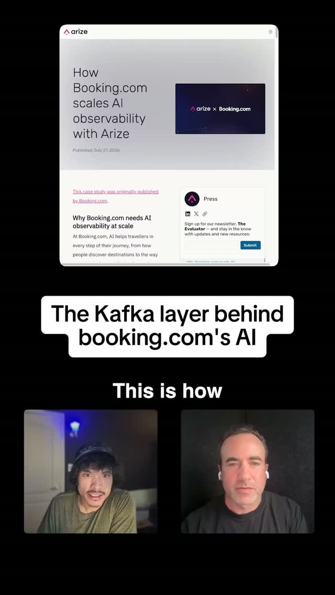
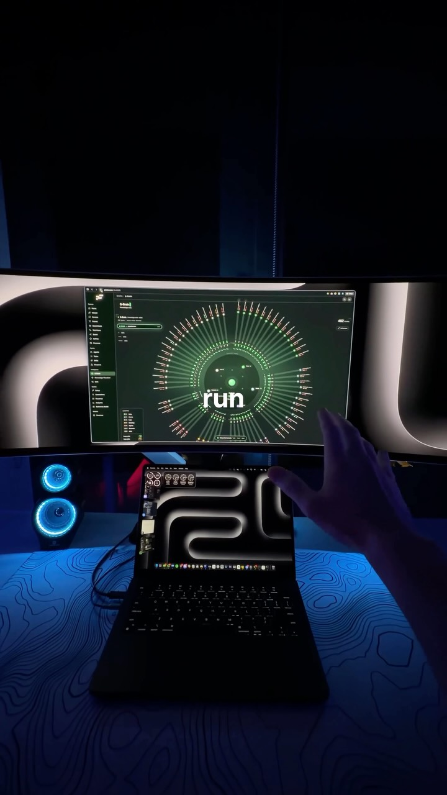

Mission Control for 80 Agents — Conway's law meets game UI
Try It — Action Sketch
Emit one JSON event per agent state change (started, blocked, needs-review, done) from your harness hooks onto a local queue — Redis or a file tail is enough to start Point Bot Crossing (or a 200-line Three.js scene) at that queue so blocked agents visibly raise hands; cluster agents by the repo/module they own to make the Conway structure visible Run a week with dashboard versus without and log minutes-to-unblock per blocked agent Falsifier: if minutes-to-unblock does not drop by at least a third versus a plain notification, the game layer is decoration and a notch widget wins
Connected Posts (11)






Prompt system — run this yourself
Pasteable into Claude Code, Claude, or any agent. One-shot for the whole result, step prompts when you want to steer. Every step carries its own audit; the gap audit makes the agent find and fill what it missed.
Mission. Produces a local agent control room: Claude Code hooks emit one JSON event per agent state change onto a local queue, a small redaction step strips secrets and personal data, and a spatial front end (Bot Crossing or a 200-line Three.js scene) shows agents clustered by the repo or module they own, with blocked agents raising hands. A crossover experiment then compares minutes-to-unblock against a plain desktop notification. Done means an event schema, working hooks, the dashboard, two weeks of logged unblock times, and a falsifier verdict: if minutes-to-unblock does not drop by at least a third, the game layer is decoration and a notch-style widget wins.
1 · Deeper, not bigger
- What a top professional would do (that you didn't ask for): An SRE or observability engineer would first define the event schema and the metric, then build the cheapest surface that could move it, and only then add the game layer. They would treat the event stream like Booking.com treats GenAI telemetry: a durable buffer between producers and consumers, redaction as a pipeline stage rather than a policy, and dual export to a live view and a warehouse for trends. They would run a proper comparison, alternating conditions by day to cancel out workload differences, and measure from the moment an agent blocks to the moment the human acts, using timestamps from the hooks rather than self-report. They would also apply Casey Muratori's version of Conway's law: map agent boundaries to modules, then count cross-boundary messages, because the layout should expose where coordination is slow.
- Rawest material to start from: The Claude Code hooks documentation (event names, the JSON payload on stdin with session_id, cwd, hook_event_name, tool_name), your own transcripts under ~/.claude/projects, the Bot Crossing repository and build review (botcrossing.com), the AgentCraft mod source (Foreman, worker isolation, per-agent commit identities), the Booking.com observability architecture write-up (collector, Kafka, PII redaction service, Arize), the OpenTelemetry GenAI semantic conventions, Casey Muratori's Conway's law lecture, Melvin Conway's 1968 paper 'How Do Committees Invent?', and Boris Cherny's Claude Code team tips (3 to 5 worktrees, plan mode, CLAUDE.md updates).
- Methods and tools: Claude Code hooks on SessionStart, UserPromptSubmit, PreToolUse, PostToolUse, Notification, Stop and SubagentStop writing JSON lines; Redis Streams (XADD, XREAD) or an append-only JSONL file tailed with a file watcher; a redaction stage using regexes for keys and tokens plus a PII detector such as Microsoft Presidio; git worktrees per agent with the worktree path as the agent's ownership key; Three.js or Bot Crossing for the scene, WebSocket from a small Python or Node server; notify-send or terminal-notifier as the control condition; DuckDB over the JSONL for analysis. Metric: minutes-to-unblock per blocked event, median and p90, with a bootstrap interval on the ratio between conditions.
- What proves it right: Hook-timestamped blocked and resumed events, not recollection. An ABAB crossover across at least ten working days so workload differences cancel. A count of missed blocks (agents blocked for over 30 minutes unnoticed) in each condition. A second person using the dashboard for one day and finding the blocked agent without explanation. A secret-scanning pass (gitleaks on the event log) showing zero leaked tokens.
Rewritten prompt — ask for exactly that:
Act as an observability engineer building a control room for my Claude Code agents. First write an event schema: ts, agent_id, session_id, worktree, module, state (started, working, blocked, needs_review, done, error), reason, and tool_name. Write Claude Code hook scripts for SessionStart, PreToolUse, PostToolUse, Notification, Stop and SubagentStop that map each hook payload to that schema and append it to a Redis stream or a JSONL file, with a redaction step that removes API keys, tokens, emails and file contents before anything is written. Derive module ownership from each agent's git worktree path. Build a local-only WebSocket server and a Three.js scene, or adapt Bot Crossing, where agents stand in clusters by module and blocked agents raise hands; clicking one shows the reason and a command to jump to its tmux pane or terminal. Bind everything to localhost. Build the control: a plain desktop notification on the same blocked events. Run an ABAB crossover over ten working days, alternating dashboard and notification by day, and compute minutes-to-unblock from hook timestamps with median, p90 and a bootstrap interval on the ratio. Count blocks unnoticed for over 30 minutes. Also count cross-module messages to show where my agent boundaries create slow coordination. Report whether minutes-to-unblock fell by a third or more; if not, recommend the notch widget.
2 · One-shot prompt
ROLE AND STANCE You are an observability engineer and creative technologist. Build a local control room for many Claude Code agents and test whether a spatial, game-like view actually reduces the time a human takes to unblock them. Source claims to test: Bot Crossing manages 80 agents on a planet where they raise hands; AgentCraft runs Claude workers in isolated worktrees under a Foreman with merges gated on approval; a MacBook notch app replaces terminal babysitting; Casey Muratori says Conway's law now applies to agents, so the partition shapes the system; Booking.com puts a Kafka buffer and a PII-redaction service between apps and Arize. Treat each as a design hypothesis. CONTEXT - Harness: Claude Code with hooks (SessionStart, UserPromptSubmit, PreToolUse, PostToolUse, Notification, Stop, SubagentStop); agents run in git worktrees, often in tmux or Ghostty panes. - Queue: Redis Streams or append-only JSONL. - Front end: Bot Crossing or Three.js; TouchDesigner gesture and Quest 3 spatial demos are inspiration only. - Control: notify-send or terminal-notifier. HARD CONSTRAINTS 1. Everything binds to localhost. No dashboard port exposed to the network; no cloud telemetry. 2. Events never carry prompt text, file contents, secrets or personal data; a redaction stage runs before write, and gitleaks runs on the log. 3. Hooks must not block or slow agents: each hook exits in under 100 ms and fails open, logging its own errors. 4. The dashboard is read-only plus 'jump to session'; it never approves permissions or runs commands on an agent's behalf. 5. The metric comes from hook timestamps only. DELIVERABLES IN ORDER 1. schema.md: event fields, state machine, and how each hook maps to a state. 2. hooks/: scripts and the settings.json snippet registering them. 3. redact.py with tests on sample payloads containing fake keys and emails. 4. server/ and scene/: localhost WebSocket server and Three.js or Bot Crossing scene; agents clustered by module from worktree path; hands raised on blocked or needs_review; click shows reason and a jump command. 5. control/: desktop notification on the same events. 6. experiment.md: ABAB schedule over ten working days and analysis script. 7. results.md: minutes-to-unblock median and p90 per condition, ratio with bootstrap interval, missed-block counts, cross-module message counts, falsifier verdict. BUILT-IN GAP ANALYSIS Write GAPS: hook events that never fire for some states (for example, how 'needs review' is detected); agents run outside the harness; days excluded and why; redaction misses found by gitleaks; claims not tested (80-agent scale if you ran 10). Fill what you can now, such as adding a heuristic for idle-too-long, and rerun the analysis. SELF-QUESTIONS - Which hook reliably signals 'blocked', and is a permission prompt the only kind of block? - When does unblock end: the next UserPromptSubmit, a permission approval, or the next PostToolUse? - Does clustering by module show anything a list sorted by wait time would not? - Were dashboard days lighter workloads than notification days? - Could the event log leak a secret through a tool argument? STOP CONDITIONS Stop and report if hooks add over 100 ms per tool call, if redaction tests fail, or if fewer than 30 blocked events occur across the ten days, which is too few to compare. RETURN FORMAT Verdict line, results table, file list, GAPS, self-question answers.
3 · Step-by-step prompts
Step 1 — Ground truth: hook payloads and blocking states
Goal: Learn exactly what each hook emits and which signals mean an agent is waiting on the human.
Read the Claude Code hooks documentation and register a temporary logging hook for every event (SessionStart, UserPromptSubmit, PreToolUse, PostToolUse, Notification, Stop, SubagentStop) that writes the raw stdin JSON to a scratch file with a receive timestamp. Run three ordinary agent sessions in separate git worktrees, including at least one permission prompt, one idle wait for input, one subagent, and one error. From the raw payloads, write schema.md: the fields available per event, and a state machine mapping events to started, working, blocked, needs_review, done and error. Define precisely when a block starts (for example a Notification for permission or idle input) and when it ends (the next UserPromptSubmit or PostToolUse in that session). Note any state no hook signals and propose a heuristic, such as no event for N minutes. Delete the raw scratch file after extracting the schema, since it contains prompts.
Expect: schema.md with an event table, state diagram in text, block start and end definitions, and known blind spots.
Audit before moving on: Replay the raw payloads through the state machine and confirm every block you remember causing is detected with correct start and end. Fail on any missed block.
Step 2 — Hooks, redaction and the event queue
Goal: Emit safe, structured events with negligible overhead.
Write hook scripts that map each payload to the schema: ts, agent_id, session_id, worktree, module (derived from the worktree path or the repo subdirectory the session works in), state, reason (short category, never prompt text), and tool_name. Pass every event through redact.py, which drops prompt and file fields entirely and regex-scrubs anything resembling API keys, bearer tokens, private keys, emails and phone numbers, with Presidio as an optional second pass. Append to a Redis stream with XADD or to events.jsonl. Each hook must exit within 100 ms and fail open: on error, log to hooks_errors.log and exit 0. Provide the settings.json snippet. Write tests for redact.py with fake keys and emails, and a timing test measuring hook overhead over 200 calls.
Expect: hooks/, redact.py, tests passing, settings snippet, and a timing report with p50 and p99 hook latency.
Audit before moving on: Run gitleaks on a day of events.jsonl and fail on any finding. Fail if p99 hook latency exceeds 100 ms; move work out of the hook into the consumer.
Step 3 — Spatial scene with Conway clustering
Goal: Build the control room view where structure and blocks are visible at a glance.
Write a localhost-only WebSocket server that reads the stream and pushes current agent states. Build a Three.js scene, or adapt Bot Crossing by pointing its agent source at your server: each agent is a figure placed in a cluster for its module, clusters arranged so modules that exchange the most cross-boundary messages sit adjacent, and a line between clusters thickens with message count. Blocked or needs_review agents raise hands and pulse; done agents sit; errored agents turn red. Clicking an agent shows its reason, wait time, and a copyable command to jump to its tmux pane or terminal session. Add an always-visible counter of blocked agents and longest wait. No approve button and no command execution from the browser. Test with a replay of recorded events at 10x speed and with 80 synthetic agents for frame rate.
Expect: server/, scene/, a replay tool, and a frame-rate note at 10 and 80 agents.
Audit before moving on: Confirm the server binds to 127.0.0.1 only with ss -tlnp. Replay a known log and check every block raises a hand within 2 s. Fail if frame rate drops under 30 fps at 80 agents.
Step 4 — Control condition and crossover schedule
Goal: Set up a fair comparison against a plain notification.
Build control/: a consumer that fires notify-send on Linux or terminal-notifier on macOS for each blocked or needs_review event, with the agent and module in the title, and nothing else. Write experiment.md: ten working days in ABAB order by day (dashboard, notification, dashboard, notification...), with the other surface disabled on each day; the hook stream runs every day regardless. Define the metric: minutes from block start to block end per event, using step 1's definitions. Define secondary metrics: blocks unnoticed over 30 minutes, number of agents run per day, and total agent-hours, to check workload balance. Write analyze.py in DuckDB over events.jsonl that labels each event with the day's condition and computes median, p90, ratio of medians with a 10,000-resample bootstrap interval, and the workload table.
Expect: control/, experiment.md with the calendar, and analyze.py tested on replayed data.
Audit before moving on: Run analyze.py on synthetic events with a known 40% improvement and confirm it recovers it. Fail if the condition label comes from anything but the calendar.
Step 5 — Run two weeks and log
Goal: Collect real blocked events under both conditions.
Run the ten-day schedule with normal work across at least five agents per day in separate worktrees, following Boris Cherny's habits: plan mode for complex tasks, CLAUDE.md updates after corrections. Each evening run analyze.py for the day, check event counts, and append notes on anything unusual (meetings, outages, a day of one huge task). Check hooks_errors.log daily and fix failures without changing the metric definition. Record cross-module message counts from the stream each day. If a day is lost to illness or travel, extend the schedule to keep the ABAB balance rather than dropping a condition day. At the end of each dashboard day, note in one line whether the module clusters helped you decide which agent to unblock first, or whether you just clicked the longest-waiting hand. These notes feed the Conway analysis in step 6.
Expect: Ten days of events.jsonl, daily summaries, a notes log, and no unexplained gaps.
Audit before moving on: Fail a day if hook errors exceed 1% of events or if the wrong surface was active. Mark it excluded with a reason and extend the schedule.
Step 6 — Validate against oracles and write the gap report
Goal: Decide whether the game layer earns its place.
Run analyze.py on all valid days. Write results.md: minutes-to-unblock median and p90 per condition, ratio of medians with bootstrap 95% interval, missed-block counts, workload balance table, and cross-module message counts with what they say about how the agents are partitioned. State the falsifier verdict: if minutes-to-unblock did not drop by at least a third with the interval excluding no-change, the game layer is decoration and a notch-style widget or plain notification wins. Have a second person use the dashboard for a session and record whether they found the blocked agent unaided. Then GAPS: each source claim (80 agents manageable via hands; Foreman decision log prevents re-litigating; notch app replaces babysitting; Conway's law for agents; Kafka plus redaction architecture) marked verified, unverified or false for this setup, plus blind spots in block detection and scale untested.
Expect: results.md with tables, verdict, second-person observation, and GAPS.
Audit before moving on: Recompute the ratio and interval with a fresh script from events.jsonl. Run gitleaks on all logs once more. Fail if any conclusion relies on recollection rather than hook timestamps.
4 · Gap analysis and audit
You are an independent reviewer of an agent control-room experiment. Open schema.md, hooks/, redact.py and its tests, server/, scene/, control/, experiment.md, events.jsonl, analyze.py and results.md. List every claim in results.md and mark each verified (cite the query and output), unverified (state the data needed), or false. Check: block start and end follow schema.md exactly; the condition per day comes from the calendar; ABAB order held or was rebalanced; workloads are comparable across conditions; the bootstrap interval was computed on the ratio of medians; hooks met the 100 ms budget and failed open; the server bound only to localhost; gitleaks finds nothing in any log; no prompt text or file contents were stored; the dashboard has no approve or execute path. List missing pieces, such as states no hook detects, agents run outside the harness, or untested scale. Rank problems by whether they could flip the falsifier verdict or leak data, fix the top three now, and report before and after. End with what needs more days, more agents, or a second user to settle.
Questions the agent must ask itself before it says done:
- Which hook event marks the start of a block, and does it fire for idle input as well as permission prompts?
- Where exactly does a block end, and could that definition favor one condition?
- Does module clustering reveal coordination costs that a list sorted by wait time would hide?
- Were dashboard days lighter or heavier workloads than notification days?
- Could a tool argument such as a curl header carry a secret into the event log?
- Does the scene stay readable at 80 agents, or only at the 5 to 10 I actually run?
- Is the dashboard tempting me to approve without reading the plan, the risk the auto-approve post raises?
- Are my agent boundaries where I expect the least design iteration, as Muratori recommends?
- Would a notch or menu-bar counter give the same unblock time for far less code?
5 · What proves it right
- Hook-timestamped block start and end events analyzed over an ABAB crossover of ten working days.
- A bootstrap 95% interval on the ratio of median minutes-to-unblock, required to show at least a one-third reduction.
- gitleaks on every event log returning zero findings, and redact.py unit tests passing.
- A second person finding the blocked agent on the dashboard without help.
- ss -tlnp showing the server bound to 127.0.0.1 only.
6 · Failure modes
- Blocks not detected: idle waits never emit a Notification. Tell: agents found waiting with no hand raised. Fix: add a no-event-for-N-minutes heuristic and log it as a distinct reason.
- Slow hooks: dashboard plumbing adds latency to every tool call. Tell: p99 hook time over 100 ms. Fix: hooks only append; all processing moves to the consumer.
- Secret leakage: tool arguments carry tokens into the log. Tell: gitleaks finding. Fix: drop argument fields entirely, keep tool_name only.
- Workload confound: dashboard days happen to be easy days. Tell: agent-hours differ by more than 25% between conditions. Fix: extend the crossover or normalize per agent-hour.
- Pretty but slower: the scene draws attention but adds a click before action. Tell: median unchanged, p90 better or worse. Fix: add jump-to-session as one click, or accept the falsifier.
- Exposed dashboard: server binds to 0.0.0.0 on a shared network. Tell: ss shows a wildcard bind. Fix: bind to localhost and add a startup assertion.
7 · Agent direction (unattended runs)
Begin with raw hook payloads from real sessions; do not design the schema from documentation alone. Keep the hooks dumb and fast, and put logic in a separate consumer process. Cache the raw event stream as the source of truth and make every analysis re-runnable from it. Spawn a sub-agent to build the Three.js scene against a recorded replay while you build hooks and redaction, and review its work by checking the localhost bind and running the 80-agent frame-rate test. Never give the dashboard power to approve permissions or execute commands. Stop and ask before editing the user's global settings.json, before running the ten-day experiment, and if block detection cannot distinguish permission waits from idle waits. Return results.md as the entry point, with schema.md, hooks/, redact.py, server/, scene/, control/, experiment.md, analyze.py and the anonymized events.jsonl.
Prompt system updated 2026-10-22 · all prompt systems · JSON